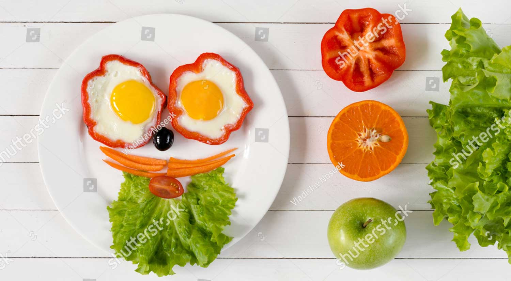

Mister Beard
What I need:
2 Red Peppers
1 Carrot
1 Lettuce leaf
1 Black Olive
1 Baby plum tomatoe
2 Eggs
Let's make it
Wash thoroughly all the vegetables.
Cut the two peppers and keep just the bottom of them. We're going to use them as a container.
With parents' help switch on the cook, keeping the two bottom of the peppers on the pan.
When the bottom of the peppers is cooked, open the egg inside the pepper. For each pepper must be there one egg.
Now make your Mr. Beard. Peppers are the eyes, the olive is the nose, carrots are the mustache and lettuce is the beard.
Little last thing is the mouth. Cut in two-part the baby plum tomato and use one side for your mouth.
How's yours?
Comment below and show everybody how you made it.
Share your meal!
Share Picture